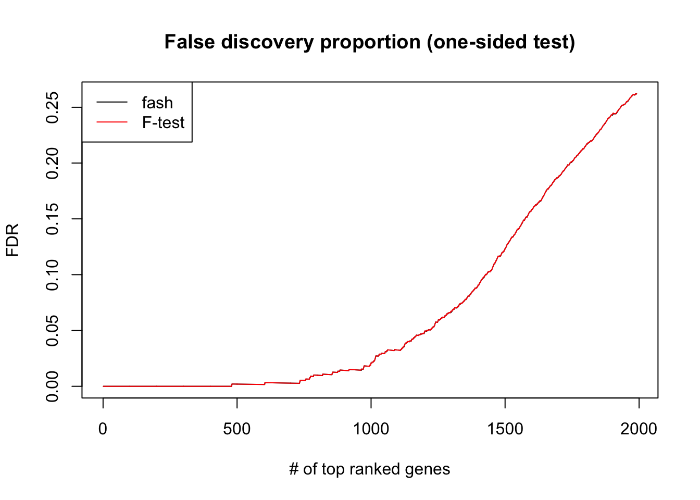
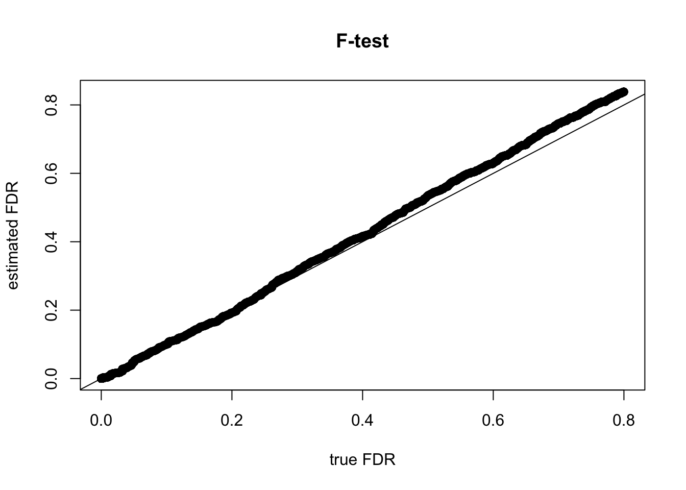
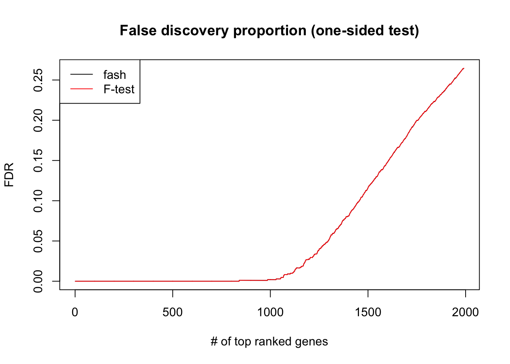
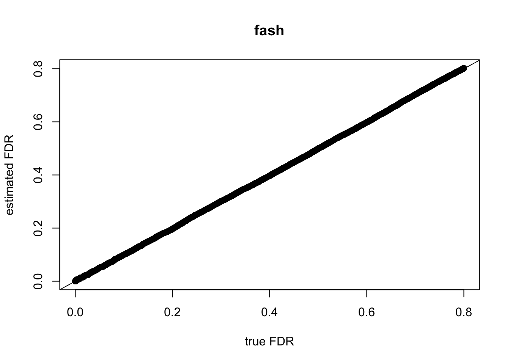
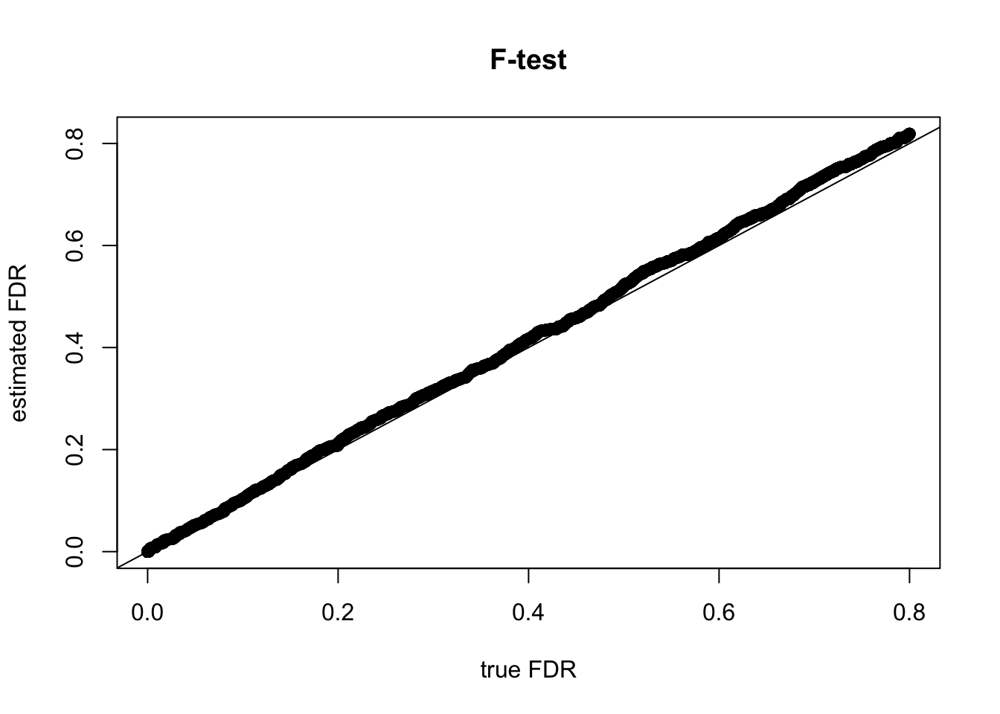
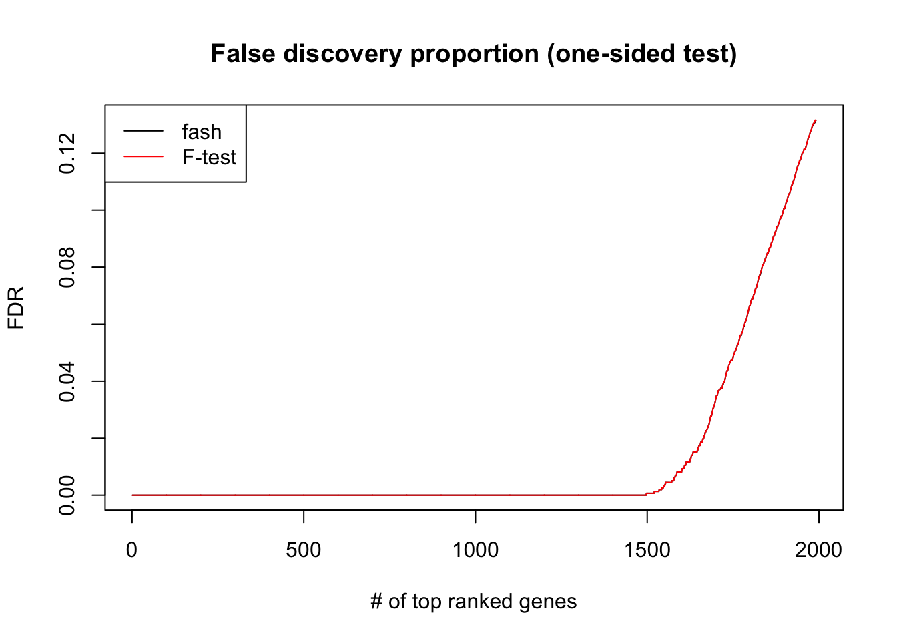
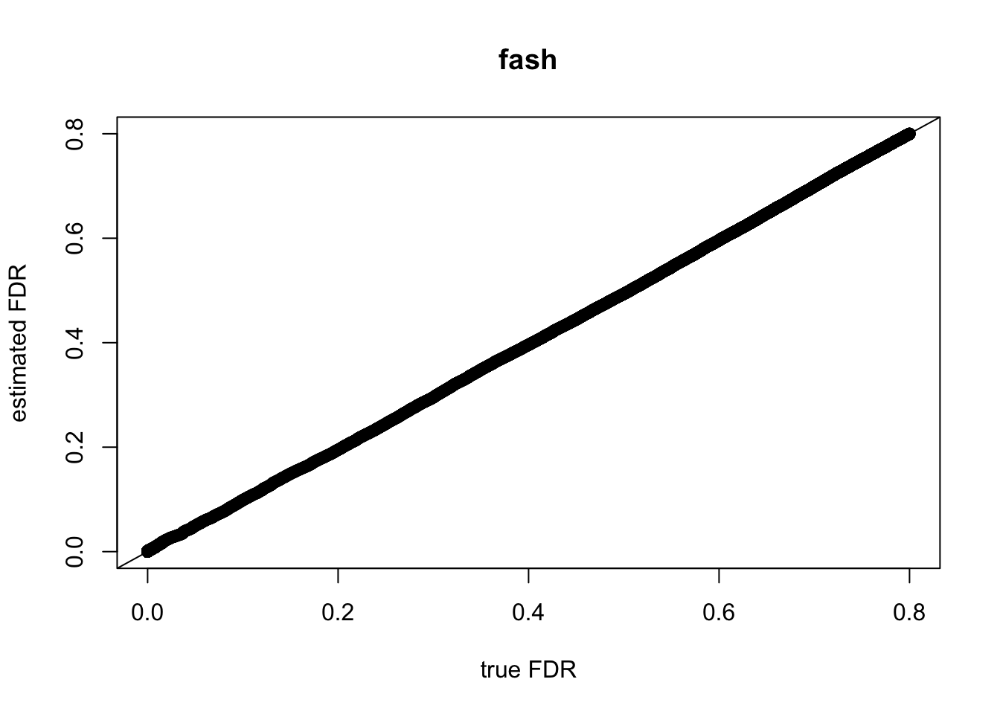
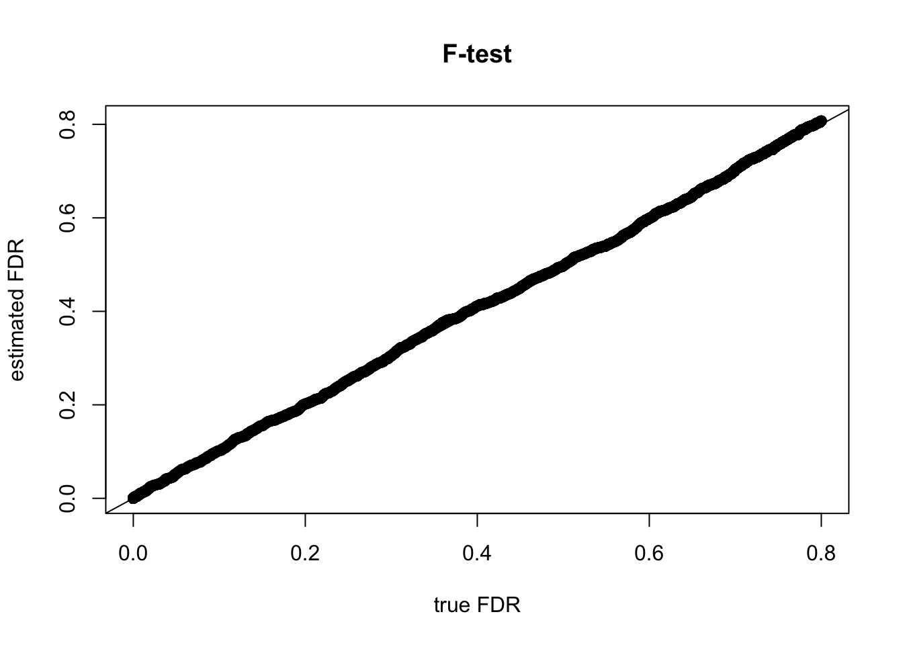

Last updated: 2016-03-03
Code version: 0f59d974ab59b5e0cc4849d66e6b28777fea518a
We simulate F-statistics from the following model: \begin{align} \hat{F}_g &= \alpha_g \times F(df_1, df_2), \\ \log(\alpha_g) &\sim g(\cdot), \end{align}where \(g(\cdot)\) is an non-negative unimodal prior for \(\log(\alpha_g)\) with mode at 0: \(g=\pi_0 \delta_0 + \pi_1 U(0, a)\).
We are interested in estimating parameters \(\alpha_g\). In the linear regression model we have \(\alpha_g=1+C\frac{\sigma_g^2}{s_g^2}\) where \(\sigma^2\) is the variance of treatment effects and \(s^2\) is the variance of errors. So \(\alpha_g \geq 1\) (\(\alpha_g=1\) iff \(\sigma^2=0\)) and that is why we let \(g\) be non-negative.
source('/Volumes/PERSONAL/MS/fash/fash.R')Loading required package: stats4Loading required package: evd
Attaching package: 'evd'The following object is masked from 'package:ashr':
denslibrary(qvalue)Warning: replacing previous import by 'grid::arrow' when loading 'qvalue'Warning: replacing previous import by 'grid::unit' when loading 'qvalue'# N: # of genes
# Nnull: # of nulls
# altsd: alternative prior component is U(-a,a) or U(0,a)
# oneside: flag, whether prior is positive (U(0,a)) or can be negative (U(-a,a))
sim_f = function(N,Nnull,df1,df2,altsd,oneside=TRUE){
null = c(rep(1,Nnull),rep(0,N-Nnull))
logalpha = rep(0,N)
if (Nnull<N){
if (oneside==TRUE){
logalpha[(Nnull+1):N] = runif(N-Nnull,0,altsd)
}else{
logalpha[(Nnull+1):N] = runif(N-Nnull,-altsd,altsd)
}
}
alpha = exp(logalpha)
#Fhat = alpha*rf(N,df1=df1,df2=df2)
logfhat = logalpha+log(rf(N,df1,df2))
Fhat = exp(logfhat)
return(list(Fhat=Fhat, logfhat=logfhat,
logalpha=logalpha, null=null,
df1=df1, df2=df2))
}set.seed(999)
# oneside
data = sim_f(N=10000,Nnull=8000,df1=10,df2=10,altsd=4,oneside=TRUE)
test = fash(data$Fhat, df1=data$df1, df2=data$df2,
oneside=TRUE, mixsd=4)
test$fitted.g$pi
[1] 0.8006402 0.1993598
$a
[1] 0 0
$b
[1] 0 4
attr(,"row.names")
[1] 1 2
attr(,"class")
[1] "unimix"Fpvalue = 1-pf(data$Fhat,data$df1,data$df2)
qval.f = qvalue(Fpvalue)$qvalCompare the MSE’s: fash gives much lower MSE (in estimating “(_g)“).
# MSE of F-test
mean((data$logalpha-log(data$Fhat))^2)[1] 0.4499705# MSE of fash
mean((data$logalpha-test$PosteriorMean.logf)^2)[1] 0.1357355Compare the FDR’s of fash and raw F-test:

# oneside
data = sim_f(N=10000,Nnull=8000,df1=5,df2=30,altsd=4,oneside=TRUE)
test = fash(data$Fhat, df1=data$df1, df2=data$df2,
oneside=TRUE, mixsd=4)
test$fitted.g$pi
[1] 0.8020231 0.1979769
$a
[1] 0 0
$b
[1] 0 4
attr(,"row.names")
[1] 1 2
attr(,"class")
[1] "unimix"Fpvalue = 1-pf(data$Fhat,data$df1,data$df2)
qval.f = qvalue(Fpvalue)$qvalCompare the MSE’s: fash gives lower MSE (in estimating “\(\log(\alpha_g)\)”).
# MSE of F-test
mean((data$logalpha-log(data$Fhat))^2)[1] 0.5860714# MSE of fash
mean((data$logalpha-test$PosteriorMean.logf)^2)[1] 0.1396507Compare the FDR’s of fash and raw F-test: F-test sometimes slightly overestimates FDR, but fash doesn’t.

# oneside
data = sim_f(N=10000,Nnull=8000,df1=50,df2=50,altsd=4,oneside=TRUE)
test = fash(data$Fhat, df1=data$df1, df2=data$df2,
oneside=TRUE, mixsd=4)
test$fitted.g$pi
[1] 0.8001052 0.1998948
$a
[1] 0 0
$b
[1] 0 4
attr(,"row.names")
[1] 1 2
attr(,"class")
[1] "unimix"Fpvalue = 1-pf(data$Fhat,data$df1,data$df2)
qval.f = qvalue(Fpvalue)$qvalCompare the MSE’s: fash gives lower MSE (in estimating “\(\log(\alpha_g)\)”).
# MSE of F-test
mean((data$logalpha-log(data$Fhat))^2)[1] 0.08136193# MSE of fash
mean((data$logalpha-test$PosteriorMean.logf)^2)[1] 0.02172878Compare the FDR’s of fash and raw F-test: almost same (which makes sense since the sample size is already quite large).

sessionInfo()R version 3.2.3 (2015-12-10)
Platform: x86_64-apple-darwin13.4.0 (64-bit)
Running under: OS X 10.10.5 (Yosemite)
locale:
[1] en_US.UTF-8/en_US.UTF-8/en_US.UTF-8/C/en_US.UTF-8/en_US.UTF-8
attached base packages:
[1] stats4 stats graphics grDevices utils datasets methods
[8] base
other attached packages:
[1] REBayes_0.62 Matrix_1.2-3 qvalue_2.2.0 truncdist_1.0-1
[5] evd_2.3-2 ashr_1.0.12 knitr_1.12.3
loaded via a namespace (and not attached):
[1] Rcpp_0.12.3 magrittr_1.5 splines_3.2.3
[4] MASS_7.3-45 munsell_0.4.3 doParallel_1.0.10
[7] pscl_1.4.9 colorspace_1.2-6 SQUAREM_2014.8-1
[10] lattice_0.20-33 foreach_1.4.3 plyr_1.8.3
[13] stringr_1.0.0 tools_3.2.3 parallel_3.2.3
[16] grid_3.2.3 gtable_0.1.2 htmltools_0.3
[19] iterators_1.0.8 yaml_2.1.13 digest_0.6.9
[22] reshape2_1.4.1 ggplot2_2.0.0 formatR_1.2.1
[25] codetools_0.2-14 evaluate_0.8 rmarkdown_0.9.5
[28] stringi_1.0-1 Rmosek_7.1.2 scales_0.3.0
[31] truncnorm_1.0-7